7210A60 R.R. FRONT PILLAR
- Path
- Procedures > 72 PANELS AND FRAME > 7210 REMOVING REFITTING > 7210A STRUCTURAL ELEMENTS (FRONT PART) > 7210A60 R.R. FRONT PILLAR
- Kind
- repair procedure (removal / refitting; the operation number is the code)
- Applies to
- all engines; all production periods
- Interactive page
- https://sloeber94.github.io/elrnDB-fMltpl/en/#/2892308
Applies to: all engines; all production periods
 Removing
Removing
 Refitting
RefittingRaise the floor carpet.
Move all fouling parts.
Check if any of the connected parts are deformed by checking body alignment dimensions. Use appropriate measurement tools (reference rigs, templates or gauges).
Straighten the body if necessary.
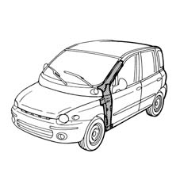
Applies to: all engines; all production periods
Remove the PVC treatment from the door sill pillar using a vibrating cutter and appropriate blade.
Use a rotary brush to clean the panel edges in order to expose the spot welds.
Undo the bolts and remove the front door hinges.
1. Drill out the spot welds indicated.
2. Use a chamfering machine to remove the weld spots shown in the figure.
3. Use a grinding wheel and remove the brazing.
4. Use a circular saw to follow the cutting lines shown in the figure.
5. Cross-section of cut.
6. Remove the upper reinforcement from the pillar.
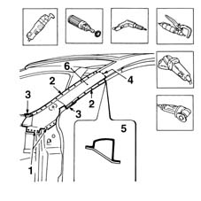
Applies to: all engines; all production periods
Use a rotary brush to expose the spot welds.
1. Drill out the spot welds shown in the figure.
2. Use a chamfering machine to remove the spot welds shown in the figure.
3. Use a circular saw and cut along the lines shown in the figure.
4. Cross-section of cut.
5. Remove the front pillar.
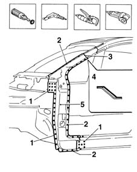
Applies to: all engines; all production periods
Refitting
RemovingStraighten the edges of the car using a profiled stake and hammer.
Use a grinding wheel to remove the spot weld residues.
1. Apply the electroweldable paint finish.
2. Make holes in the door sill as shown in the figure.
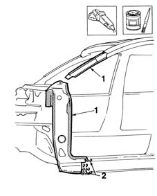
Applies to: all engines; all production periods
Use a rotary brush to remove the corrosion-proofing around the edge of the parts.
1. Working at the bench, tighten the bolts (1a) to fix the pillar (1b) to the windscreen frame reinforcement (1c).
2. Apply electroweldable paint finish to the edges in contact with the car.
3. Make holes in the part as shown in the figure.
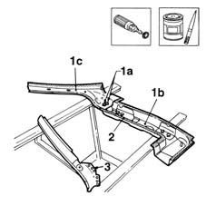
Applies to: all engines; all production periods
1. Fit the parts in their seatings and secure them with self-locking grippers.
2. Tack both parts using Parker screws.
Remove the self-locking grippers.
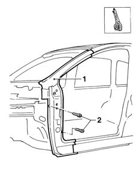
Applies to: all engines; all production periods
1. Refit the hinges and the front door.
2. Refit the front wing.
Use a gauge to check the windscreen seat diagonals and the alignment of the components.
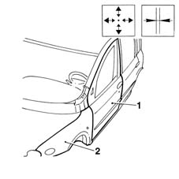
Applies to: all engines; all production periods
Remove the front door and wing.
1. Use a circular saw and cut the two panel edges to obtain a perfect join line.
2. Trim off any excess from the panel.
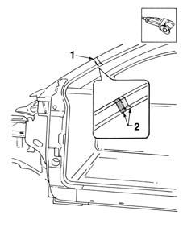
Applies to: all engines; all production periods
1. Use a spot welder to weld the points indicated.
2. Use a MIG welder to seam weld the door frame reinforcement.
3. Use a MIG welder to fill weld the areas shown in the figure.
4. Use an oxyacetylene torch to braze the points shown in the figure.
Trim off the surplus panel.
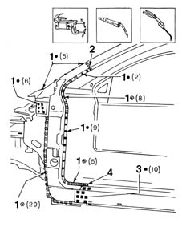
Applies to: all engines; all production periods
1. Fit the part in its seating.
2. Use a circular saw and cut the part for fitting.
3. Trim off the excess.
Use a grinding wheel to remove the weld residues.
Apply the electroweldable paint finish.
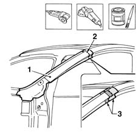
Applies to: all engines; all production periods
1. Use a spot welder to weld the areas shown in the figure.
2. Use a MIG welder to seam weld the areas shown in the figure.
3. Use a MIG welder to fill weld the areas shown in the figure.
4. Hard solder the areas shown in the figure.
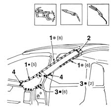
Applies to: all engines; all production periods
Correct any deformations in the panel using a profiled stake and mallet.
1. Use a grinding wheel to dress the weld and remove residues.
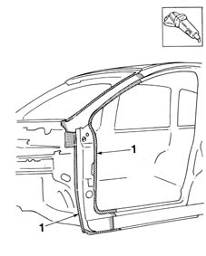
Applies to: all engines; all production periods
Apply rust-proofing to newly-welded areas.
1. Seal the joint lines between the part and the car.
2. Apply foam through the hole indicated in the figure.
Apply paint.
3. Apply wax oil inside the front pillar.
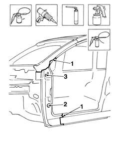
Applies to: all engines; all production periods
Refit the parts removed previously.
Position the carpet.